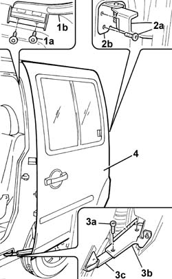
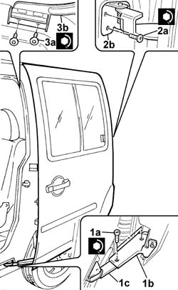

7210E40 R.R. GLAZED SLIDING SIDE DOOR
- Path
- Procedures > 72 PANELS AND FRAMES > 7210 REMOVING-REFITTING > 7210E external parts > 7210E40 R.R. GLAZED SLIDING SIDE DOOR
- Kind
- repair procedure (removal / refitting; the operation number is the code)
- Applies to
- all engines; all production periods
- Interactive page
- https://sloeber94.github.io/elrnDB-fDbl/en/#/2585265
Applies to: all engines; all production periods; only with equipment: Doblò trim level
 Removing
Removing
 Refitting
Refitting1. Undo upper retaining bolts (1a) and separate the sliding door from carriage (1b).
2. Undo the rear retaining bolts (2a) and separate the sliding door from trolley (2b).
3. Undo lower retaining bolts (3a) and separate bracket (3b) on the door from carriage (3c).
4. Remove the sliding door and place on a suitable stand.

Applies to: all engines; all production periods; only with equipment: Doblò trim level
Refitting
RemovingCheck that the sliding door does not show signs of damage such as blisters, rust, dents, scratches etc.
1. With the aid of a second operator, position the sliding door and tighten lower bolts (1a) securing bracket (1b) on the door to carriage (1c).
 | Fastening | Component | Ø | Value (daNm) |
|---|---|---|---|---|
1a | Bolt | SLIDING DOORS/ | M6 | 1.2 |
2. Tighten the rear bolts (2a) to carriage (2b) to torque.
| Fastening | Component | Ø | Value (daNm) |
|---|---|---|---|---|
2a | Bolt | SLIDING DOORS/ | M6 | 1.2 |
3. Tighten the upper bolts (3a) to carriage (3b) to torque.
| Fastening | Component | Ø | Value (daNm) |
|---|---|---|---|---|
1a | Bolt | SLIDING DOORS/ | M6 | 1.2 |

Applies to: all engines; all production periods; only with equipment: Doblò trim level